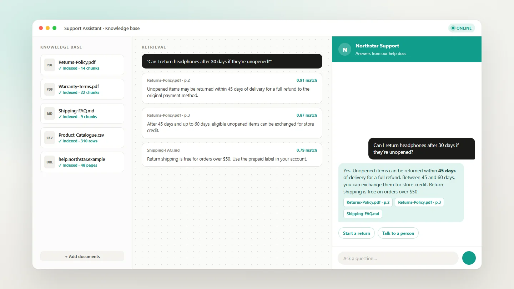

AI & Automation
RAG Chatbots
AI chatbots that answer accurately from a business's own documents.


Project snapshot
Retrieval-augmented chatbots that answer questions from a company's own documents, policies and product data, instead of guessing, for customer support and internal teams.
- Project
- RAG Chatbots
- Type
- AI & Automation
- Services
- AI Agent Development
- Knowledge Base Setup
- Integrations
- Tools
- LangGraph
- LLM
- Vector Database
- Embeddings
- Key capabilities
- Answers from Your Data
- Source-grounded Replies
- Website Chat
- Internal Assistant
- Human Fallback
- Status
- Delivered · private client system
01Overview
ProjectOverview
General AI chatbots sound confident but don't know a business's products, prices or policies. These chatbots use retrieval-augmented generation: the client's documents are split, embedded and stored in a vector database, and the bot looks up the relevant passages before it answers.
The result is an assistant that answers from real company information, can be embedded on a website for customers or used internally by staff, and hands over to a person when a question falls outside what it knows. LangGraph manages the retrieval and answer steps.
02Key features
KeyFeatures
- Answers from your documentsReplies grounded in the client's own content, not generic AI knowledge.
- Vector searchDocuments embedded and searched to find the most relevant passages.
- Website or internal useEmbedded as a customer chat widget or used by staff as an assistant.
- Easy to updateAdd or replace documents and the bot's knowledge updates.
- Human fallbackHands over when a question falls outside its knowledge.
- Agent workflowLangGraph orchestrates retrieval, reasoning and response.
More projects
Explore more work.
 AuraWeb Design & Development
AuraWeb Design & Development OiyoWeb Design & Development
OiyoWeb Design & Development Go AbroadWeb Design & Development
Go AbroadWeb Design & Development Forno RossoWeb Design & Development
Forno RossoWeb Design & Development Evo DentalWeb Design & Development
Evo DentalWeb Design & Development One NationWeb Design & Development
One NationWeb Design & Development AI Calling AgentAI & Automation
AI Calling AgentAI & Automation WhatsApp AutomationAI & Automation
WhatsApp AutomationAI & Automation AI Lead Enrichment & CRM SyncAI & Automation
AI Lead Enrichment & CRM SyncAI & Automation Speed to Lead AutomationAI & Automation
Speed to Lead AutomationAI & Automation